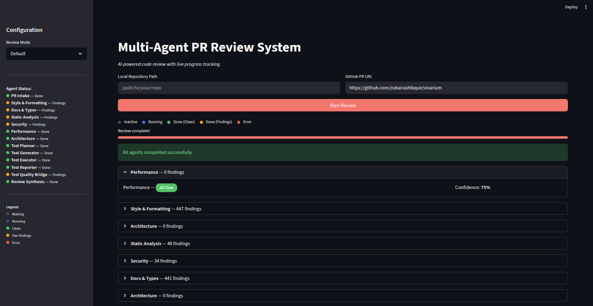
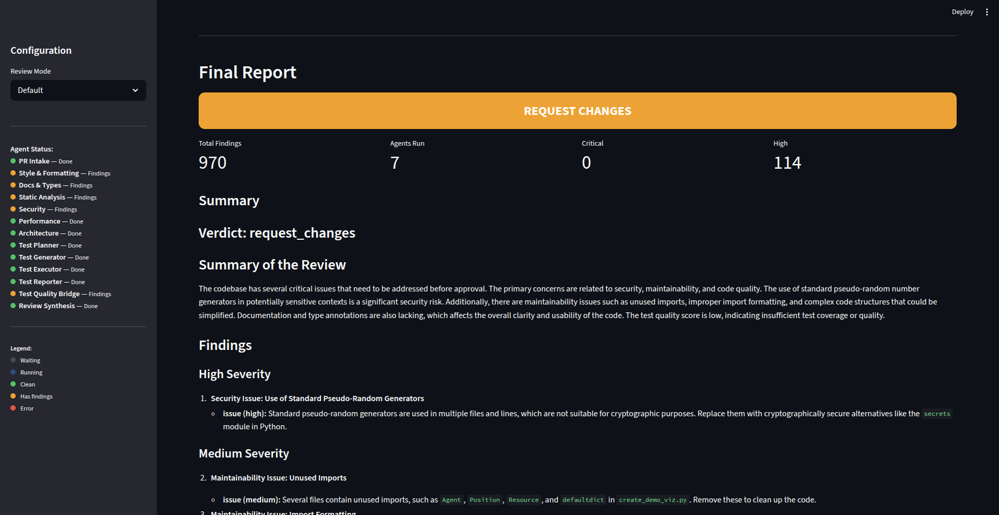
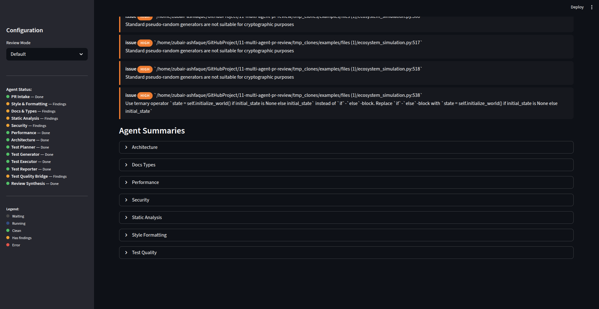

The Motivation
Code review is one of the most important steps in software development. Before any code reaches production, another human being reads it, checks for bugs, verifies the style, looks for security holes, evaluates performance, and decides whether the tests are good enough. The problem is that this process is slow, inconsistent, and limited by what a single reviewer can hold in their head at one time.
A typical code review takes hours or even days. The reviewer is tired, context-switching between their own work and your pull request. They might catch a SQL injection vulnerability but miss a performance bottleneck. They might notice a missing docstring but overlook a race condition hidden inside a threading import. No single human can be an expert in style, security, performance, architecture, documentation, type safety, and test coverage all at once.
What if you could replace that single overloaded reviewer with a team of 13 specialists, each focused on exactly one domain, all working at the same time? That is what CodeSentinel delivers. Thirteen AI agents fan out in parallel across your pull request. Each one runs deterministic tools first (linters, scanners, AST visitors) and only calls the LLM to summarise what the tools found. A separate test pipeline plans, generates, executes, and reports on test coverage. Everything converges into a single final report written in Conventional Comments format.
The questions this blog answers:
- How do you orchestrate 13 agents in a single LangGraph DAG with fan-out parallelism and convergence?
- How do you combine deterministic tools (ruff, bandit, mypy, AST visitors) with LLM-powered analysis?
- How do you build a self-correcting test pipeline that plans, generates, runs, and retries tests automatically?
- What are the 5 execution paths through the DAG, and when does each one trigger?
- How do you add observability across 12 LLM calls using 4 different providers?
- How do you format the final output as Conventional Comments that developers actually want to read?
Technology Stack
CodeSentinel
Complete codebase: 13-agent LangGraph DAG, 14 deterministic tools, 6 AST visitors, self-correcting test pipeline, Conventional Comments output, Streamlit dashboard with live DAG, and 4-provider observability stack. 57 tests, production-ready.
View RepositoryThe Challenge
The Challenge is building a multi-agent system where 13 agents work together safely, without stepping on each other, without hallucinating results, and without losing visibility into what happened. Five interconnected problems make this hard:
- Parallelism without race conditions — Seven agents write to the same shared state object at the same time. If two agents try to overwrite the same dictionary key, one agent's work disappears. You need a merge strategy that combines parallel writes safely.
- LLM hallucination in tool-based domains — Asking GPT-4o "does this code have security vulnerabilities?" produces plausible but unreliable answers. Bandit and pip-audit give deterministic, verifiable results. The challenge is running tools first and only using the LLM to summarise what the tools found.
- Test generation that actually works — An LLM can generate test code, but that code might have syntax errors or import failures. You need a self-correcting loop: generate, execute, check for errors, and retry with the error message fed back to the LLM.
- Five execution paths through a single DAG — Not every pull request follows the same route. Draft PRs should short-circuit. Oversized PRs should skip detailed analysis. Test failures might need retries. Low-quality test scores should trigger escalation. The DAG must handle all five paths with conditional routing.
- Observability across 12 LLM calls — When the final report looks wrong, you need to trace back through 13 agents and 12 LLM invocations to find exactly which one produced the bad output. Without tracing, debugging a multi-agent system is like finding a needle in a haystack.
Naive AI Review
(Single LLM prompt)
- Single prompt tries to cover all domains
- LLM "finds" security issues by guessing
- No deterministic tool verification
- Tests are suggested, never generated or run
- No retry logic — one shot, one chance
- No tracing — black box when output is wrong
CodeSentinel
(13-agent DAG)
- 13 specialist agents, each focused on one domain
- Bandit + pip-audit run first, LLM summarises results
- 14 tools + 6 AST visitors provide ground truth
- Tests planned, generated, executed, and reported
- Self-correcting retry loop (up to 2 retries)
- 4 observability providers trace every LLM call
Lucify the Problem
Imagine a city government needs to inspect a newly constructed building before it can be occupied. They do not send one inspector who knows a little about everything. They send a team of specialists.
The Building Inspection Analogy
The city sends six specialists simultaneously: an electrical inspector checks wiring and circuits (that is our security agent running bandit and pip-audit). A plumbing inspector checks pipes and water flow (that is the performance agent looking for bottlenecks using AST visitors). A structural engineer checks load-bearing walls and foundations (that is the architecture agent evaluating design patterns). A fire safety inspector checks exits and sprinklers (that is the static analysis agent running ruff and pylint). An energy auditor checks insulation and efficiency (that is the style/formatting agent running black and ruff format checks). An accessibility inspector checks ramps, elevators, and signage (that is the docs/types agent checking docstrings with mypy and AST visitors).
All six fan out through the building at the same time — they do not wait for each other. Meanwhile, a separate stress-test team works sequentially: first they plan which tests to run (test planner), then they set up the test equipment (test generator), then they run the tests (test executor), and finally they write up the results (test reporter). If the equipment fails on the first try, they recalibrate and retry (self-correcting loop).
Once all six specialists and the stress-test team have finished, a quality bridge inspector (test quality agent) checks that the stress tests meet the minimum standard. Then the lead inspector (review synthesis agent) reads every specialist's report, weights the findings by severity, and writes a single unified verdict: approve the building, request changes, or escalate to a higher authority.
Where the analogy breaks down: a building inspection takes weeks. CodeSentinel completes this entire workflow in under two minutes, and its "inspectors" never get tired, never skip a checklist item, and log every observation for a full audit trail across four different record-keeping systems (observability providers).
Lucify the Jargon
Before we look at the architecture, let us define six key concepts. Each one gets a definition, a simple example, and a real-world analogy so the idea sticks.
Directed Acyclic Graph (DAG)
Definition: A graph where every connection has a direction (A goes to B, not the other way around) and there are no loops that bring you back to where you started. "Directed" means one-way arrows. "Acyclic" means no circles.
Simple Example: Think of a recipe. You crack eggs, then whisk them, then pour into the pan, then cook. You never go backwards from cooking to cracking eggs. Each step feeds forward to the next. Some steps can happen in parallel (chopping vegetables while heating the pan), but you never revisit a completed step.
Analogy: A recipe with parallel prep steps that always moves forward and never goes backwards. CodeSentinel's 13 agents are arranged in exactly this pattern: intake first, then 7 agents in parallel, then convergence, then synthesis, then done.
Fan-out / Convergence
Definition: Fan-out means one node triggers multiple nodes to run at the same time. Convergence means all of those parallel nodes must finish before the next single node can start. Together, they let you parallelise work and then collect the results.
Simple Example: In CodeSentinel, after PR Intake finishes, 7 agents start simultaneously (fan-out). Once all 7 complete, the Test Quality agent starts (convergence). This is like a relay race where the baton splits into 7 copies, each runner completes their leg, and the next runner waits until all 7 batons arrive.
Analogy: A restaurant kitchen. The head chef calls out the order (PR Intake). Seven stations — grill, sauté, fry, salad, sauce, pastry, garnish — all work on their component simultaneously (fan-out). The expeditor (Test Quality) waits until every plate is ready before assembling the final dish and sending it out (convergence).
Static Application Security Testing (SAST)
Definition: Analysing source code for security vulnerabilities without actually running the program. The tool reads the code text, matches known dangerous patterns (like eval(), hardcoded passwords, or SQL injection sinks), and reports findings with severity levels.
Simple Example: CodeSentinel runs bandit on every changed Python file. Bandit reads the code and flags patterns like subprocess.call(shell=True) as a HIGH severity command injection risk. It also runs pip-audit to check if any installed package has a known CVE (publicly disclosed vulnerability).
Analogy: Airport security scanning your luggage with an X-ray machine. They do not open your bag and test each item — they look at the structure and flag anything suspicious. Bandit does the same thing with code: it scans the structure and flags dangerous patterns without running a single line.
Abstract Syntax Tree (AST)
Definition: A tree-shaped representation of your code's structure. Python's built-in ast module parses source code into a tree where each node represents a language construct: functions, classes, loops, imports, assignments, and so on. You can walk this tree to find specific patterns.
Simple Example: CodeSentinel has 6 AST visitors: check_function_length finds functions longer than 50 lines, check_docstrings finds public functions without documentation, check_perf_patterns finds membership tests on list comprehensions (should use sets), check_race_conditions finds threading without locks, check_global_mutable_state finds mutable module-level variables, and check_circular_imports finds imports inside functions.
Analogy: A grammar diagram of a sentence. "The cat sat on the mat" becomes a tree: sentence → subject ("the cat") → verb ("sat") → prepositional phrase ("on the mat"). An AST does the same thing for code. CodeSentinel walks this tree looking for structural problems that no amount of text-matching could reliably find.
Conventional Comments
Definition: A standard format for code review comments that starts with a label (suggestion, issue, nitpick, praise, thought, todo) followed by a severity level and the actual feedback. This makes it instantly clear whether a comment is blocking or informational.
Simple Example: Instead of writing "maybe change this?", CodeSentinel produces: issue (high): src/auth.py:42 — SQL injection risk via string concatenation. Use parameterized queries instead. Or: nitpick (info): src/utils.py:15 — Public function 'parse_data' missing docstring. Add a docstring explaining the return type.
Analogy: A teacher grading papers with a colour-coded pen system. Red pen (issue) means "this must be fixed". Blue pen (suggestion) means "consider changing this". Green pen (praise) means "nice work here". Yellow pen (nitpick) means "minor style point". The student knows at a glance which comments are blocking and which are optional.
Structured Output (Pydantic State)
Definition: Instead of letting each agent return free-form text, every agent writes to a shared Pydantic model (ReviewState) with typed fields. This means every piece of data has a known structure — no JSON parsing, no regex extraction, no guessing what format the output is in.
Simple Example: The ReviewState model has fields like agent_findings: dict[str, AgentFindings] where each agent writes to its own key. The Finding model has typed fields: agent, severity, category, file, line, message, suggestion. Every finding from every agent follows exactly the same structure.
Analogy: The difference between a tax form and a blank piece of paper. A tax form has specific boxes for income, deductions, and credits — the structure tells you exactly what goes where. A blank piece of paper is free-form text where anything could be anywhere. Pydantic state models are the tax form: every agent knows exactly which box to fill in.
Make the Blueprint
CodeSentinel is a 13-node LangGraph DAG. Each node is a specialised agent that reads from and writes to a shared ReviewState Pydantic model. The DAG has two parallel tracks — six analysis agents (Track A) and a four-stage test pipeline (Track B) — that converge at a quality bridge before the final synthesis. Here is the full architecture:
CodeSentinel DAG Architecture
The 13 Agents
Each agent has a specific role, a set of tools it runs, and an LLM call (or not). Here is every agent in the system:
The Self-Correcting Test Pipeline
The test pipeline is the only sequential track in the DAG. Four agents work in order, with a retry loop between the generator and executor:
Test Pipeline Detail
route_after_test_gen function sends it back to the generator with the error message. Maximum 2 retries. If it still fails, execution continues to the reporter with whatever output is available.
Five Execution Paths
Not every pull request takes the same route through the DAG. There are five distinct paths, each triggered by different conditions:
The ReviewState Model
Every agent reads from and writes to a single ReviewState Pydantic model. This is the contract that holds the entire system together. Here is how data flows through the state:
State Flow Through the DAG
pr_url — GitHub PR URLrepo_path — Local repo pathmetadata — PRMetadatadiff — DiffContextproject_config — ProjectConfigagent_findings — dict with _merge_dicts reducertest_plan — TestPlangenerated_test_code — strexecutor_results — ExecutorResultstest_diagnostic — TestDiagnosticReportfinal_report — FinalReportverdict — approve / request_changes / escalateconventional_comments — listerrors — list (operator.add reducer)escalations — list (operator.add reducer)agent_findings field uses a custom _merge_dicts reducer so that when 7 agents write to it in parallel, each agent's dictionary entry is merged safely instead of one overwriting another. The errors and escalations fields use operator.add to concatenate lists from parallel agents.
Execute the Blueprint
Now we walk through the actual code that powers each component. Every snippet comes directly from the CodeSentinel repository.
Step 1: The State Model
The ReviewState is the shared contract between all 13 agents. Two reducer patterns make parallel writes safe: _merge_dicts for the agent findings dictionary, and operator.add for error and escalation lists.
# src/graph/state.py
from pydantic import BaseModel, Field
from typing import Annotated
import operator
def _merge_dicts(left: dict, right: dict) -> dict:
"""Merge two dicts, with right overwriting overlapping keys."""
merged = left.copy()
merged.update(right)
return merged
class ReviewState(BaseModel):
"""Main state flowing through the LangGraph review pipeline."""
# Input
pr_url: str = ""
repo_path: str = ""
# PR Intake output
metadata: PRMetadata = Field(default_factory=PRMetadata)
diff: DiffContext = Field(default_factory=DiffContext)
project_config: ProjectConfig = Field(default_factory=ProjectConfig)
# Agent findings (each agent writes to unique key; reducer merges parallel writes)
agent_findings: Annotated[dict[str, AgentFindings], _merge_dicts] = Field(
default_factory=dict
)
# Test pipeline
test_plan: TestPlan = Field(default_factory=TestPlan)
generated_test_code: str = ""
executor_results: ExecutorResults = Field(default_factory=ExecutorResults)
test_gen_retries: int = 0
# Final output
final_report: FinalReport = Field(default_factory=FinalReport)
# Error and escalation tracking (reducer pattern for LangGraph)
errors: Annotated[list[str], operator.add] = Field(default_factory=list)
escalations: Annotated[list[Escalation], operator.add] = Field(
default_factory=list
){"agent_findings": {"security": ...}}, LangGraph needs a way to combine these dictionaries. The _merge_dicts reducer merges them key-by-key so no agent's work is lost. Without this, the last agent to finish would overwrite all previous findings.
Step 2: Building the Graph
The build_graph function wires all 13 nodes together. The critical piece is the fan-out after PR Intake: a conditional edge function that returns a list of 7 target nodes for parallel execution, or a single "review_synthesis" node for short-circuit.
# src/graph/builder.py
from langgraph.graph import END, StateGraph
def build_graph(settings, obs_manager=None):
graph = StateGraph(ReviewState)
# Add all 13 nodes
graph.add_node("pr_intake", pr_intake)
graph.add_node("style_formatting", style_formatting)
graph.add_node("docs_types", docs_types)
graph.add_node("static_analysis", static_analysis)
graph.add_node("security", security)
graph.add_node("performance", performance)
graph.add_node("architecture", architecture)
graph.add_node("test_planner", test_planner)
graph.add_node("test_generator", test_generator)
graph.add_node("test_executor", test_executor)
graph.add_node("test_reporter", test_reporter)
graph.add_node("test_quality", test_quality)
graph.add_node("review_synthesis", review_synthesis)
graph.set_entry_point("pr_intake")
# Fan-out: 7 agents in parallel OR short-circuit
def _fan_out_after_intake(state: ReviewState) -> list[str]:
result = route_after_intake(state)
if result == "short_circuit":
return ["review_synthesis"]
return [
"style_formatting", "docs_types", "static_analysis",
"security", "performance", "architecture", "test_planner",
]
graph.add_conditional_edges("pr_intake", _fan_out_after_intake, [
"style_formatting", "docs_types", "static_analysis",
"security", "performance", "architecture",
"test_planner", "review_synthesis",
])
# Test pipeline: sequential
graph.add_edge("test_planner", "test_generator")
graph.add_conditional_edges("test_generator", route_after_test_gen, {
"retry": "test_generator",
"execute": "test_executor",
})
graph.add_edge("test_executor", "test_reporter")
# Convergence: all 7 paths feed into test_quality
for agent in ["style_formatting", "docs_types", "static_analysis",
"security", "performance", "architecture", "test_reporter"]:
graph.add_edge(agent, "test_quality")
# Quality gate: escalate or synthesise
graph.add_conditional_edges("test_quality", route_after_quality, {
"escalate": "review_synthesis",
"synthesize": "review_synthesis",
})
graph.add_edge("review_synthesis", END)
return graph.compile()Step 3: The Three Routing Functions
Three routing functions control the five execution paths. Each one inspects the current state and returns a string that tells LangGraph which edge to follow.
# src/graph/routing.py
def route_after_intake(state: ReviewState) -> str:
"""Route after PR intake: short-circuit if LOC > max or draft PR."""
total_loc = state.metadata.loc_added + state.metadata.loc_removed
if state.metadata.is_draft:
return "short_circuit"
if total_loc > 400:
return "short_circuit"
return "continue"
def route_after_test_gen(state: ReviewState) -> str:
"""Route after test generation: retry if syntax errors (max 2 retries)."""
if state.executor_results.syntax_error and state.test_gen_retries < 2:
return "retry"
return "execute"
def route_after_quality(state: ReviewState) -> str:
"""Route after test quality: escalate if confidence too low."""
if state.test_assessment.quality_score < 0.4:
return "escalate"
return "synthesize"Step 4: An Analysis Agent (Security)
Every analysis agent follows the same pattern: run deterministic tools first, then call the LLM to summarise the tool output. Here is the security agent as a representative example:
# src/agents/security.py
SECURITY_SYSTEM_PROMPT = (
"""You are a security reviewer. Given the findings from """
"""bandit (SAST) and pip-audit (dependency vulnerabilities), """
"""provide a security assessment. Classify each finding by """
"""risk level and recommend mitigations. Be concise."""
)
def create_security_node(llm, settings):
def security_node(state: ReviewState, config=None) -> dict:
repo_path = state.repo_path
changed_files = state.metadata.files_changed
# Step 1: Run deterministic tools
bandit_findings = run_bandit(repo_path, changed_files=changed_files)
pip_findings = run_pip_audit(repo_path)
all_findings = bandit_findings + pip_findings
# Step 2: LLM summarises tool output (not the other way around)
summary = ""
if all_findings:
findings_text = "\n".join(
f"- [{f.severity.value}] {f.file}:{f.line} {f.message}"
for f in all_findings[:20]
)
response = llm.invoke([
SystemMessage(content=SECURITY_SYSTEM_PROMPT),
HumanMessage(content=f"Security findings:\n{findings_text}"),
], config=config)
summary = response.content or ""
return {"agent_findings": {
**state.agent_findings,
"security": AgentFindings(
agent_name="security",
findings=all_findings,
summary=summary,
confidence=0.85,
)
}}
return security_nodeStep 5: AST Visitors
The 6 AST visitors use Python's built-in ast module to walk the syntax tree and find structural patterns. Here are two of the most interesting ones:
# src/tools/ast_visitors.py
import ast
from pathlib import Path
def check_perf_patterns(file_path: str) -> list[Finding]:
"""Check for common performance anti-patterns."""
tree = _parse_file(file_path)
if tree is None:
return []
findings = []
for node in ast.walk(tree):
# Membership test on list comprehension (should use set)
if isinstance(node, ast.Compare):
for op, comparator in zip(node.ops, node.comparators, strict=False):
if isinstance(op, ast.In) and isinstance(comparator, ast.ListComp):
findings.append(Finding(
agent="ast_visitor", severity=Severity.MEDIUM,
category="perf-pattern", file=file_path, line=node.lineno,
message="Membership test on list comprehension — use set",
suggestion="Convert to set comprehension for O(1) lookup",
))
# String concatenation in loop
if isinstance(node, ast.For):
for child in ast.walk(node):
if isinstance(child, ast.AugAssign) and isinstance(child.op, ast.Add):
findings.append(Finding(
agent="ast_visitor", severity=Severity.LOW,
category="perf-pattern", file=file_path, line=child.lineno,
message="String concatenation in loop",
suggestion="Use list + join or io.StringIO",
))
return findings
def check_race_conditions(file_path: str) -> list[Finding]:
"""Check for potential race condition patterns."""
tree = _parse_file(file_path)
source = Path(file_path).read_text(encoding="utf-8")
has_threading = "import threading" in source or "from threading" in source
has_lock = "Lock()" in source or "RLock()" in source
if has_threading and not has_lock:
for node in ast.walk(tree):
if isinstance(node, ast.ImportFrom) and node.module == "threading":
findings.append(Finding(
agent="ast_visitor", severity=Severity.HIGH,
category="race-condition", file=file_path, line=node.lineno,
message="Threading used without Lock/RLock",
suggestion="Add synchronization primitives for shared state",
))
return findingsStep 6: The Test Executor (No LLM)
The Test Executor is unique: it is the only agent in the system that does not use an LLM. It simply runs pytest on the generated test file and captures the results. No interpretation, no summarisation — just raw execution.
# src/agents/test_executor.py
def create_test_executor_node(settings):
"""Create a test executor node (no LLM required)."""
def test_executor_node(state: ReviewState, config=None) -> dict:
test_path = str(
Path(state.repo_path) / "tests" / "generated" / "test_generated.py"
)
try:
results = run_pytest(
test_path=test_path,
repo_path=state.repo_path,
randomly=False,
coverage=True,
)
except Exception as e:
results = ExecutorResults(output=f"Execution error: {e}")
return {"executor_results": results}
return test_executor_nodeStep 7: Review Synthesis and Conventional Comments
The synthesis agent is the final decision-maker. It reads all findings from all agents, groups them by severity, determines the verdict, and produces Conventional Comments for every significant finding.
# src/agents/review_synthesis.py
def create_review_synthesis_node(llm, settings):
def review_synthesis_node(state: ReviewState, config=None) -> dict:
# Collect all findings from all agents
all_findings = []
agent_summaries = {}
for name, af in state.agent_findings.items():
all_findings.extend(af.findings)
agent_summaries[name] = af.summary
# Group by severity
findings_by_severity = {}
for f in all_findings:
sev = f.severity.value
findings_by_severity.setdefault(sev, []).append(f)
# Determine verdict
has_critical = len(findings_by_severity.get("critical", [])) > 0
has_high = len(findings_by_severity.get("high", [])) > 0
has_escalations = len(state.escalations) > 0
if has_escalations:
verdict = Verdict.ESCALATE
elif has_critical or has_high:
verdict = Verdict.REQUEST_CHANGES
else:
verdict = Verdict.APPROVE
# Build Conventional Comments from top findings
comments = []
for f in sorted(all_findings,
key=lambda x: list(Severity).index(x.severity))[:20]:
label = "issue" if f.severity in (Severity.CRITICAL, Severity.HIGH) \
else "suggestion"
if f.severity == Severity.INFO:
label = "nitpick"
comments.append(ConventionalComment(
label=label, severity=f.severity,
file=f.file, line=f.line,
body=f"{f.message}. {f.suggestion}" if f.suggestion else f.message,
))
# LLM writes the summary narrative
response = llm.invoke([
SystemMessage(content=SYNTHESIS_SYSTEM_PROMPT),
HumanMessage(content=f"Verdict: {verdict.value}\n..."
)], config=config)
return {"final_report": FinalReport(
verdict=verdict,
summary=response.content,
findings_by_severity=findings_by_severity,
conventional_comments=comments,
total_findings=len(all_findings),
agent_summaries=agent_summaries,
)}
return review_synthesis_nodeStep 8: Four Observability Providers
CodeSentinel supports four observability providers. Two are callback-based (can run simultaneously) and two are proxy-based (mutually exclusive). Each traces every LLM call with token counts, latencies, and full prompt/response pairs.
# src/observability/providers.py
def setup_langsmith(settings):
"""Callback-based: sets env vars for automatic LangChain tracing."""
os.environ["LANGCHAIN_TRACING_V2"] = str(settings.tracing_v2).lower()
os.environ["LANGCHAIN_API_KEY"] = settings.api_key
os.environ["LANGCHAIN_PROJECT"] = settings.project
def setup_langfuse(settings, session_id=None, user_id=None):
"""Callback-based: returns a CallbackHandler for Langfuse."""
from langfuse.callback import CallbackHandler as LangfuseCallbackHandler
return LangfuseCallbackHandler(
public_key=settings.public_key,
secret_key=settings.secret_key,
host=settings.host,
)
def setup_helicone(settings):
"""Proxy-based: returns base_url and auth headers."""
return {
"base_url": "https://oai.helicone.ai/v1",
"default_headers": {"Helicone-Auth": f"Bearer {settings.api_key}"},
}
def setup_braintrust(settings):
"""Proxy-based: returns base_url and auth headers."""
return {
"base_url": "https://api.braintrust.dev/v1/proxy",
"default_headers": {"Authorization": f"Bearer {settings.api_key}"},
}Observability Architecture
Step 9: Streamlit Dashboard with Live DAG
The Streamlit dashboard provides a real-time view of the review process. As each agent completes, the DAG updates, agent cards appear with findings, and the progress bar advances. Here is the core streaming loop:
# src/streamlit_app/app.py
def main():
st.title("CodeSentinel")
repo_path = st.text_input("Local Repository Path")
pr_url = st.text_input("GitHub PR URL")
if st.button("Start Review", type="primary"):
settings = get_settings()
obs_manager = configure_observability(settings)
graph = build_graph(settings, obs_manager)
initial_state = ReviewState(repo_path=repo_path, pr_url=pr_url)
config = {"callbacks": get_callbacks(obs_manager)}
node_status = {n: "inactive" for n in ALL_NODES}
node_status["pr_intake"] = "running"
# Streaming loop: process events as agents complete
for event in graph.stream(initial_state, config=config):
node_name = list(event.keys())[0]
node_output = event[node_name]
# Update status, render DAG, show agent card
_update_node_status(node_name, node_output, node_status, seen_keys)
render_dag(node_status) # Live DAG visualisation
render_agent_card(key, af) # Agent findings card
# Update progress bar
progress_pct = min(completed_count / total_nodes, 1.0)
st.progress(progress_pct, text=f"Completed: {display_name}")
# Final report
render_final_report(final_report, all_agent_results)


Step 10: Test Suite (57 Tests)
CodeSentinel is tested with 57 unit tests covering the state model, routing functions, AST visitors, tool runners, and agent logic. Here is the test output:
$ poetry run pytest tests/unit/ -v --tb=short ========================= test session starts ========================== collected 57 items tests/unit/test_state.py::test_review_state_defaults PASSED tests/unit/test_state.py::test_merge_dicts_reducer PASSED tests/unit/test_state.py::test_severity_enum PASSED tests/unit/test_state.py::test_verdict_enum PASSED tests/unit/test_routing.py::test_route_intake_draft PASSED tests/unit/test_routing.py::test_route_intake_large_loc PASSED tests/unit/test_routing.py::test_route_intake_continue PASSED tests/unit/test_routing.py::test_route_test_gen_retry PASSED tests/unit/test_routing.py::test_route_test_gen_execute PASSED tests/unit/test_routing.py::test_route_quality_escalate PASSED tests/unit/test_routing.py::test_route_quality_synthesize PASSED tests/unit/test_ast_visitors.py::test_function_length PASSED tests/unit/test_ast_visitors.py::test_missing_docstrings PASSED tests/unit/test_ast_visitors.py::test_perf_patterns PASSED tests/unit/test_ast_visitors.py::test_race_conditions PASSED tests/unit/test_ast_visitors.py::test_global_mutable_state PASSED tests/unit/test_ast_visitors.py::test_circular_imports PASSED ... ========================= 57 passed in 4.23s ===========================
Agent-Tool Matrix
The table below shows which tools and capabilities each agent uses. Notice that only one agent (Test Executor) operates without an LLM call:
| Agent | Deterministic Tools | AST Visitors | LLM |
|---|---|---|---|
| 1. PR Intake | git diff, file reader | — | GPT-4o |
| 2. Style / Formatting | ruff, black --check | — | GPT-4o |
| 3. Docs / Types | mypy | check_docstrings | GPT-4o |
| 4. Static Analysis | pylint | check_function_length, check_global_mutable_state, check_circular_imports | GPT-4o |
| 5. Security | bandit, pip-audit | — | GPT-4o |
| 6. Performance | — | check_perf_patterns, check_race_conditions | GPT-4o |
| 7. Architecture | file structure analysis | — | GPT-4o |
| 8. Test Planner | code analysis | — | GPT-4o |
| 9. Test Generator | code writer | — | GPT-4o |
| 10. Test Executor | pytest runner | — | None |
| 11. Test Reporter | result analyser | — | GPT-4o |
| 12. Test Quality Bridge | quality scorer | — | GPT-4o |
| 13. Review Synthesis | finding aggregator | — | GPT-4o |
Conclusion
CodeSentinel demonstrates that multi-agent AI systems are not just theoretical — they work in practice when you combine deterministic tools with LLM intelligence, enforce safe parallelism through reducer patterns, and build self-correcting loops for unreliable operations like code generation. The result is a system that reviews Python code faster, more consistently, and more thoroughly than any single human reviewer could.
- Deterministic tools first, LLM second: Run bandit, ruff, mypy, and AST visitors to produce verifiable findings. Use the LLM only to summarise what the tools found. This eliminates hallucinated security vulnerabilities and fabricated lint errors.
- Dict reducer for parallel writes: The
_merge_dictsreducer andoperator.addfor lists let 7 agents write to the same state object simultaneously without data loss. Each agent writes to its own dictionary key. - Self-correcting test pipeline: Generated tests often fail on the first try. The retry loop feeds error messages back to the LLM and gives it up to 2 chances to fix syntax errors before proceeding.
- Short-circuit for edge cases: Draft PRs and oversized PRs skip the full analysis pipeline and go straight to synthesis. This saves compute and avoids meaningless reviews.
- Conventional Comments for readability: Every finding gets a label (issue, suggestion, nitpick, praise), a severity, and a specific file/line reference. Developers know at a glance which comments are blocking.
- Observability as a first-class citizen: Four providers (LangSmith, Langfuse, Helicone, Braintrust) trace every LLM call. Callback-based and proxy-based providers can run simultaneously for maximum coverage.
Future Work
- Multi-language support: Extending agents to review JavaScript, TypeScript, Go, and Rust codebases alongside Python.
- GitHub Actions integration: Running CodeSentinel as a GitHub Action that automatically comments on pull requests with Conventional Comments.
- Caching layer: Caching tool results (ruff, bandit, mypy) for unchanged files to reduce review time on incremental PRs.
- Human-in-the-loop: Adding an approval step where a human reviewer can accept, reject, or modify the AI's findings before they are posted.
- Fine-tuned models: Training specialised models for each agent domain to reduce cost and latency compared to using GPT-4o for all 12 LLM calls.
CodeSentinel
Full source code: 13-agent LangGraph DAG, 14 tools, 6 AST visitors, self-correcting test pipeline, Conventional Comments, Streamlit dashboard, and 4-provider observability. 57 passing tests. Production-ready.
View Repository